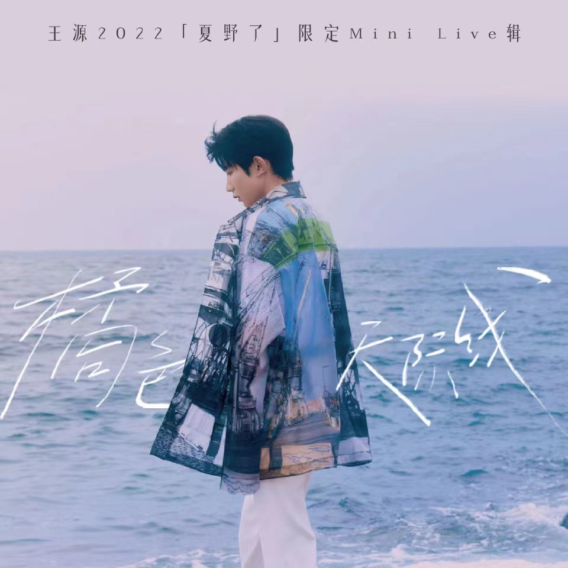

王源
客厅狂欢
专辑 2022年发布
《客厅狂欢》是一辑立足子裹挟的空间、与时间对视的发散之作。
夏野了
专辑 2021年发布
有时候，我们不只是我们。换个角度:对于“我”，也不会只有唯一的认识与解读。
肆百击
EP(迷你专辑) 2020年发布
世界应夏重生，和熙日照中万物沐浴在鲜嫩的景象里。 感知世界，感爱自己。
源
专辑 2019年发布
收录的歌曲来自一个不风男孩平凡的生命肌理。 ”我是王源，我很平凡。”
一样
EP(迷你专辑) 2018年发布
”生而自由，爱而无畏。" "天真灿烂，尘世游慢， 请拿出鼓动风云的勇敢， 为自己誓死效忠。"
宝贝
EP(迷你专辑) 2018年发布
王源首张数字专辑《宝贝》为王源公益项目“源基金”而作，专辑售卖所得净收益将全数捐给“源基金”。
和你在一起
EP(迷你专辑) 2020年发布
TFBOYS在成团七周年之际发布。希望能够让人们感受到音乐由内而外所传达的美好与力量。
第一次告白
EP(迷你专辑) 2019年发布
TFBOYS在成团六周年发布。 青春正好，不负时光。 前路漫长，放肆去闯。 未来遥远，勇敢去追。
喜欢你
EP(迷你专辑) 2018年发布
TFBOYS在迈入成年之际发布，为青春的分界线留下纪念，是起承转合之作，以新姿态共赴十年之约。
我们的时光
TFBOYS专辑 2017年发布
传递少年梦想的声音。成长的路上充满未知，三个人一直相互陪伴长大。“好好珍惜好好感受乘现在的时光。”
大梦想家
EP(迷你专辑) 2015年发布
只要你愿意，所有的梦想都来得及实现。 你， 就是自己的大梦想家。
青春修炼手册
EP(迷你专辑) 2014年发布
以青春为名，路途难免艰辛，乐观、阳光、正能量成就了热血的信仰。其中包含成名曲《青春修炼手册》。
Heart梦·出发
EP(迷你专辑) 2014年发布
TFBOYS首张迷你专辑，代表着TFBOYS(The Fighting Boys）正式出道。

橘色天际线
MINILIVE 2022演唱会
往复的时间集聚在此刻，日落弥漫至夜晚的咽喉。橘色的天际线，是世界向海面倾斜。
朝暮
王源20岁的一天ONLINE·LIVE
20岁的王源用他的音乐和成长带给我们的——“暮”色中的声音世界。
源
2019“源”演唱会
王源首次个人演唱会。祝愿大家爱自己所爱，不要放弃，愿自己所愿，不被蹉跎。
BORNFREE十八岁演唱会
王源十八岁演唱会 2018
在家乡重庆向粉丝以及家人表达自己的感谢。少年在追梦路上满怀热情。
日光旅行七周年演唱会
TFBOYS七周年线上演唱会
2020年七周年演唱会。每一首歌都被反复打磨，精心呈现了一场视听盛宴。
告白The Fever演唱会
2019TFBOYS六周年演唱会
在全员成年之际准备了一场炙热的告白演唱会，演唱会现场的每一个时刻都值得珍藏。
1826+开始·想象演唱会
2018TFBOYS五周年演唱会
从最初的梦想启航，到如今的收获颇多，星光旅途中的点滴历历在目。

Alive Four演唱会
TFBOYS2017四周年演唱会
Alive：存在的、活力的。Four：TFBOYS+四叶草。又可译为Alive for young,love,hope,forever,表达了TFBOYS会一直以充满活力的形式为梦想奋斗。
北灵少年志之大主宰
电视剧 2020年
该剧由张萌、澄丰执导，王源、欧阳娜娜、 骆明劼领衔主演，讲述了资质卓绝的少年牧尘从草根少年成长为撼动大陆、为善除恶的大英雄，同时收获了友情和爱情的故事。
地久天长
电影 2019年
王源饰演“痞痞的少年”刘星，刘耀军的儿子。影片讲述了两个家庭因为一次意外而生缝隙，甚至其中一家由北方远走遥远的南方，相隔三十年后再度聚首。
我们的少年时代
电视剧 2017
由成志超导演、郭敬明监制，王俊凯、王源、易烊千玺领衔主演的青春励志成长校园剧。讲述了这群意气风发的棒球小将们用汗水和热血，共同书写了他们最辉煌的少年时代。
爵迹
电影 2016
《爵迹》是由郭敬明执导的全真人CG魔幻题材电影。王源饰演苍白少年，白银祭司之一。讲述了一场王爵和使徒们为了真相和荣誉的战役一触即发。
超少年密码
电视剧 2016
《超少年密码》是由TFBOYS主演的校园悬疑网络剧，讲述了TFBOYS饰演的角色在这一系列层层逼近的谜题里，上演兄弟间的友情、两代人的亲情，真实与虚假的利益纠葛。
王牌对王牌
综艺 2017 2018
节目每期围绕一个主题，邀请两支王牌团队，由两队固定队长各带领多名热门IP嘉宾进行PK对战，同时加入王牌特工角色，通过才艺比拼、游戏竞技，决出王牌中的王牌。
青春旅社
综艺 2017
王源在其中与其他嘉宾担任固定经营者,与节目嘉宾分为两组各自经营两家青春旅社，接待来自五湖四海的游客，在创业生活中畅聊青春、倾听故事，共品人生五味。
TF少年go
综艺 2013 2014 2015
北京时代峰峻文化艺术发展有限公司旗下TF家族自制的一档集资讯、播报、脱口秀的综艺节目。王源担任主持。该节目有王俊凯、易烊千玺及TF家族练习生等参与录制。
BGM：参演角色